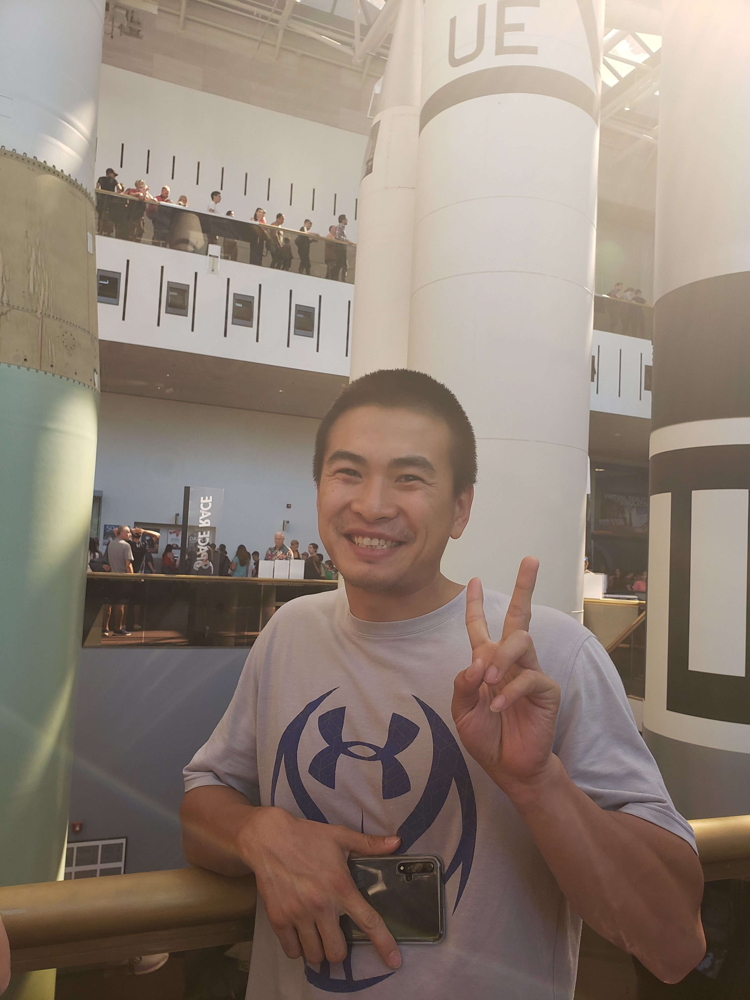
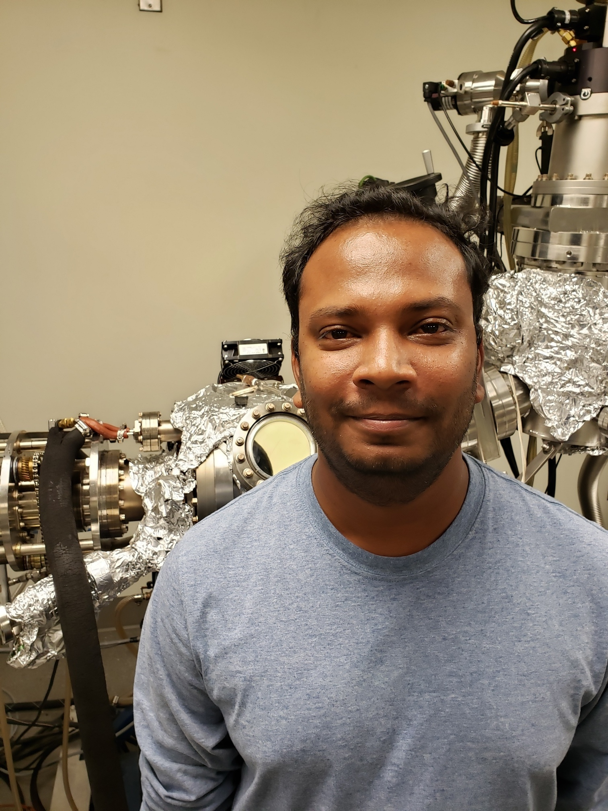
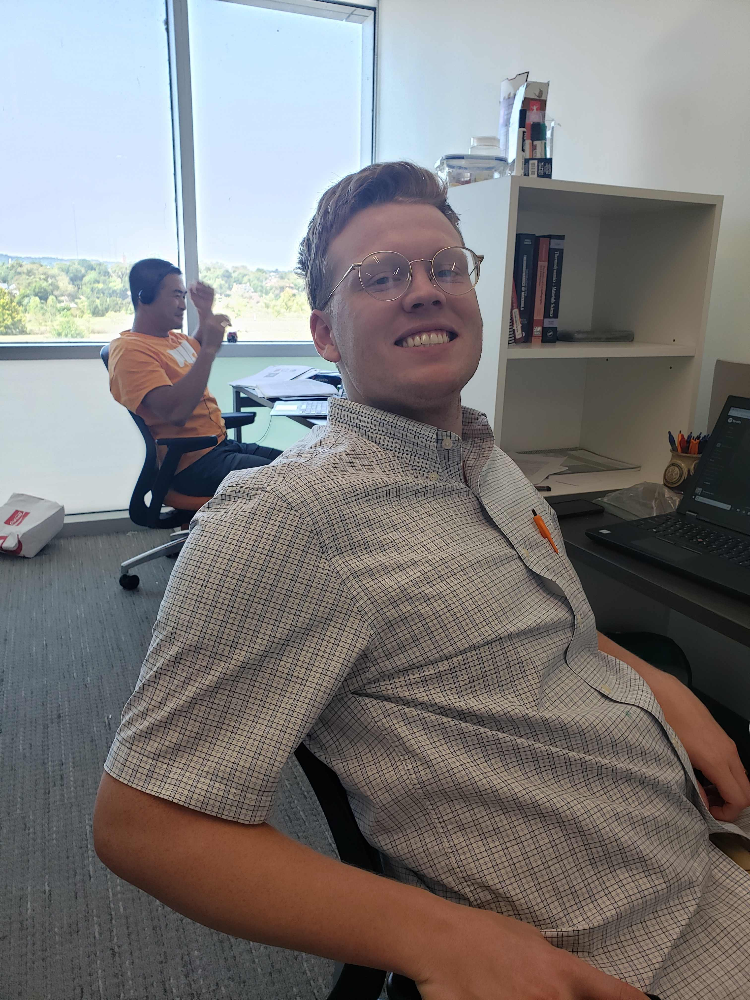
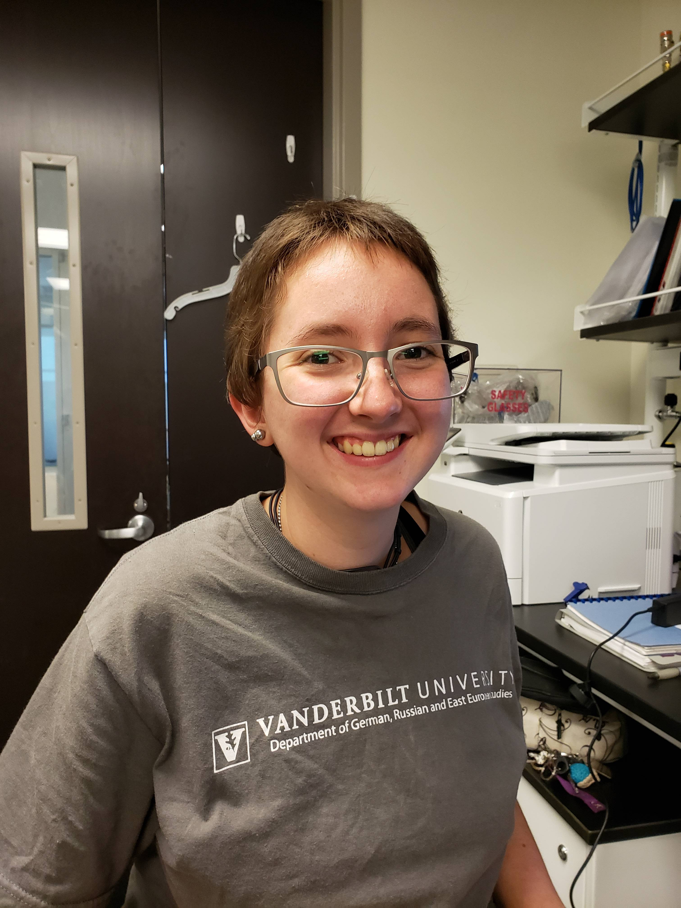
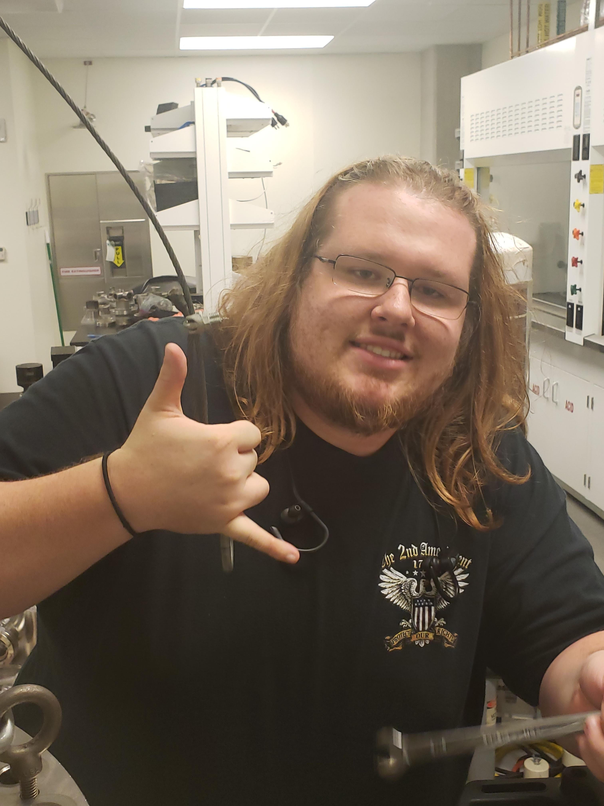
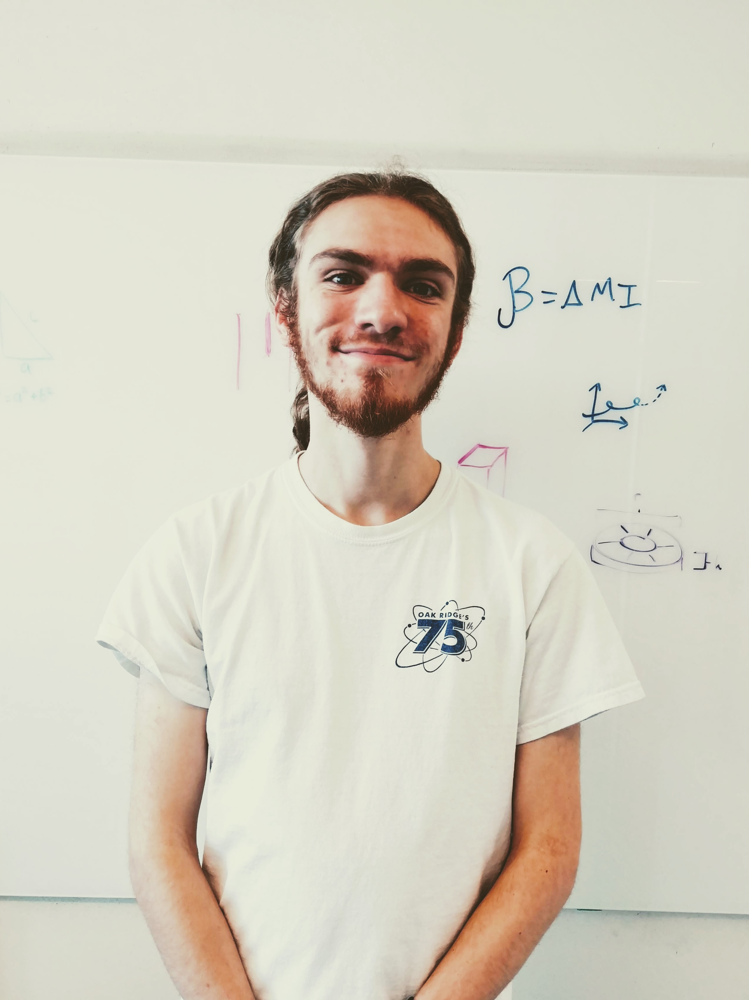

Gilbert Group
Group Members
Dustin Gilbert, Assistant Professor, Materials Science
Dr. Dustin Gilbert is the head of the Gilbert Group at JIAM. He is a professor in the Tickle College of Engineering Materials Science Department.
Graduate Student Researchers
Nan Tang, Ph.D. Student of Materials Science, started 2018
Nan Tang joined the lab in 2018 after graduating with a master's degree in materials engineering at Sichuan University in Chengdu, China.
Namila Liyanage, Ph.D. Student of Physics, started 2017
Namila Liyanage began work at JIAM in 2018 after completing his first year of classes. He earned his master's degree from The University of Colombo, Sri Lanka.
Cameron Jorgensen, Ph.D. Student of Materials Science, started 2019
Cameron Jorgensen joined the lab in 2019. He previously worked at Idaho National Lab after earning a bachelor's degree at Brigham Young University in physics.
Undergraduate Student Researchers
Lizabeth Quigley, Junior, started 2019
Liz Quigley is currently persuing a bachelor's degree in mechanical engineering. She was recruited from Prof. Gilbert's 2018 MSE 201 class. She spent the summer of 2019 at NIST as part of the Surf program.
James Lee, Junior, started 2019
James Lee is currently persuing a bachelor's degree in Materials Science. He worked with us in the summer in 2019 and built an arduino controlled thermoelectric tester for high-throughput investigations.
Joshua Norton, Junior, started 2019
Joshua Norton is currently persuing a bachelor's degree in mechanical engineering. He was recruited from Prof. Gilbert's 2019 MSE 201 class.
Website Developers
Noah Hobson, Junior, started 2019
Noah Hobson is currently persuing a bachelor's degree in Computer Science. He wrote and maintains this website and has worked to improve the communication of our laboratory research to a broader audience.